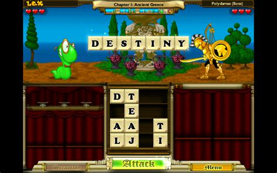
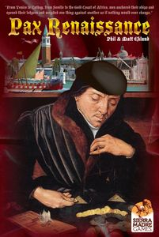
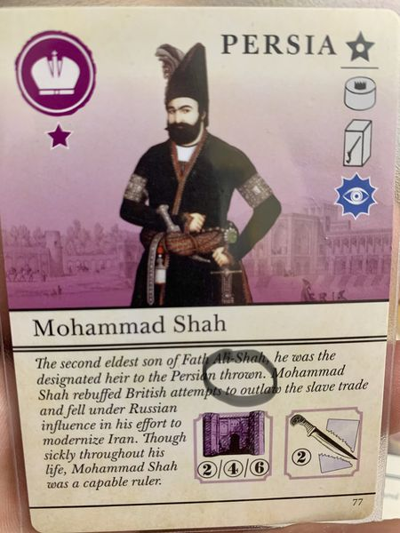
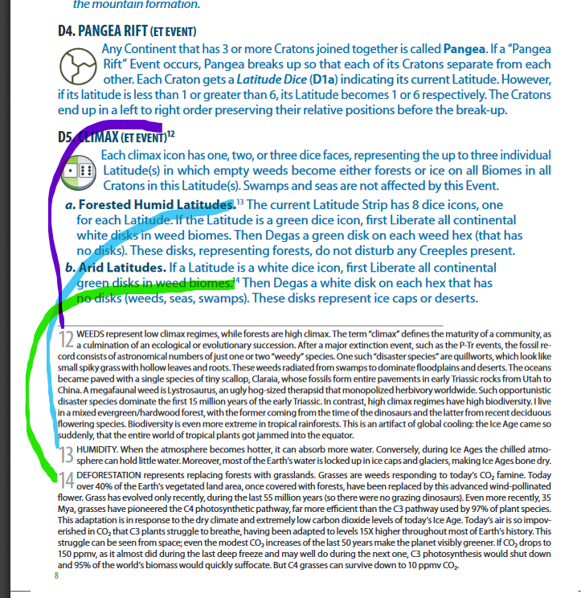

Uppgift 2. Var att skriva om ens erfarenheter med lärospel och reflektera över några spel man lärt sig saker ifrån
Vilka Lärspel har du spelat:
Har säkert spelat flera lärspel när jag var yngre men det ända jag kommer ihåg är Bookworm adventure. Ett spel där man attackerar fiender genom att skapa ord. Kommer inte ihåg så mycket kring det dock som gör det svårt att eventuellt prata om det.
Det blir nog lättare att diskuttera om jag väljer spel som jag kommer ihåg att jag lärt mig mycket från vare sig det var direkt eller indirek En av dem som kommer upp mest i minnet från när jag var yngre är Warcraft 3 som är ett Real time strategy game där man tar kontroll över olika raser och försöker vinna över en motståndare (eller AI)

Och om jag ska ta nåt från när jag vart äldre så kommer jag fuska och välja valfrit brädspel från designern Phil Eklund eftersom jag tycker hans spel är väldigt relevanta just när det kommer till lärospel. Om jag skulle behöva specifiera mig ännu mer så skulle jag säga Pax och BIOS serien av spel. Phils har gjort ett stort setiment av olika strategi brädspel från Area Control spel (Som Risk) till Marknad spel (Som Monopol) (OBS Dessa spel är inte alls som Risk eller Monopol. Phils spel är faktiskt roliga att spela. Detta var bara lättaste sättet att få er att förstå vad för slags brädspel dem är)
Vad har jag eventuellt lärt mig från dessa spel:
Bookworm Adventure
Om vi börjar med Bookworm adventure så skulle jag nog säga att den till viss del hjälpt mig med min engelska och stavning.
Warcraft 3
Men vad som gör mig tveksam till hur mycket engelska jag faktiskt lärt mig av Bookworm är tack vare att spel som Warcraft 3 som jag spela otroligt mycket då jag var ung. Detta spel lärde mig otroligt mycket engelska. Utanför spelets main story campaign så fanns ett battle.net online hub där man kunde online köra bannor skapade av andra spelare. Det var där jag spenderade mestadels av min tid i spelet och genom att socialisera med andra spelare så lärde jag mig snabbt engelska. Den sociala aspekten ledde mig till att också göra egna banor som var en liten början på att lära mig game/leveldesign. Så den primära motivationsfaktoren var den sociala aspekten av spelet och att jag tyckte att det var roligt att interagera med Warcraft 3 communityn.
Phil Eklund spel (Pax och BIOS serien)
Phil är en intressant designer. Phil är en frustrerande logisk designer. När han börjar göra ett spel så väljer ett ämne och hans spel ska försöka återspegla det ämnet så mycket som möjligt. Detta leder till att alla hans spel har mekaniker som känns otroligt påhakade och onödiga och bara där för att han vill att hans spel ska återspeggla ämnet så bra som möjligt. Men även om alla hans spel har vissa små iriterade mekaniker som gör dem svåra att lära, så är slutprodukten ändå enligt mig ett superbt spel man lär sig mycket om. Pax serien handlar alla om olika historiska tidpunkter. Man lär sig otroligt mycket av att spela dessa spel eftersom många spelmekaniker har sin grund i saker som faktiskt hände. Eklund brukar också addera flavor text på varje kort som förklarar delar av historien bakom kortet.
Bios serien handlar om livets ursprung och första spelet handlar om hur organismer första skapades och det sista handlar om hur människan utvecklades genom tiden. En till sak som man gjort att jag lärt mig mycket från Eklunds spel är att hans regelböcker innehåller mycket information om ämnet spelet handlar om och vad mekanikerna försöker återspegla.
Jag har lärt mig otroligt mycket om historia och biologi av dessa spel och dem har också motiverat mig till att på egen hand lära mig mer om deras ämnen.
Vad tycker du om Lärspel:
Dem flesta tradionella lärspel är gjorda för småbarn. Vilket ger dem inte det bästa ryktet. Det man lär sig i dem är för lätt och är ingen utmaning för dem flesta äldre. Men Eklunds spel bevissar att det är möjligt och att det finns många som är intresserade av att gå in på djupet av ett ämne i ett spel. Personligen ser jag fram emot vad detta intresse för mer djupa lärspel kommer leda till :D.